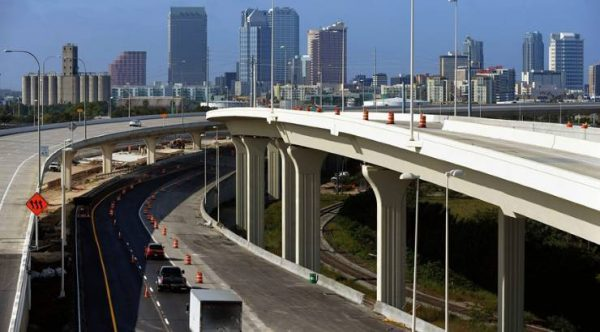
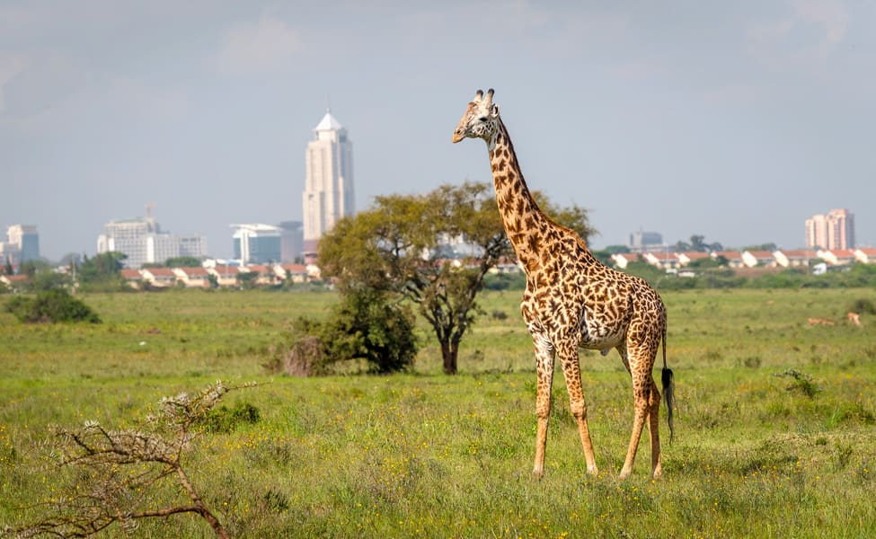

It acts as a development center

due to it's rapid growth over the past few years, it isnt a surprise that this county acts as a developement
center due to the rapid increase of business and or even including the new buisness idea start ups.
It acts as a business center
Nairobi county has a lot businesses in it and most of their main headquaters tend and or are located with the county which
is provides employment and work to the people living there.
It acts as a tourist destination

it is also a tourist hub and hotspot, they are many sites one can and visit during their stay there.
some of the include the below mentioned;
Nairobi National Park-located on the outskirts of the skycrappers of nairobi city, it is a haven for wilflife and one can go
on their walking trails and or bond with the orphaned animals through the David Sheldrick Wildlife Trust.
Giraffe centerenjoy a 1.5-kilometer self-guided forest walk in the adjacent nature reserve after feeding and visiting the
giraffes. the center also displays information of the endangered rothchilds giraffe and one can learn about them-
Karura forest reserve-great place to hike having a 15-kilometers multi-tiered hiking trail for hikers they will enjoy this and or a
picnic in the end if they so do wish.
Nairobi National Muesum-the museum displays cultral and history artifacts with a display of over 900 bird types. it is also adjecent to
the snake park, and currently inclusion of a marine park which kids will love to see the fish swim about.
railway museum-favorite exhibit is the carriage used during the hunt for the Maneater of Kima in 1900. a collection of other different
types of locomotives for railway history buffs to enjoy and go through.
at the moment, the county only has an acting governer who is also the speaker of assembly and has been in the position since december 2020
The Governor at the moment is County Assembly Speaker Benson Mutura
places;
the county though small and one of the populous in the country, has an overwhelming total of 17 parliamentary Constituencies;
they include;
westlands
Dagoretti North
Dagoretti South
Langata
Kibra
Roysambu
Kasarani
Ruaraka
Embakasi South
Embakasi North
Embakasi Central
Embakasi East
Embakasi West
Makadara
Kamukunji
Starehe
Mathare